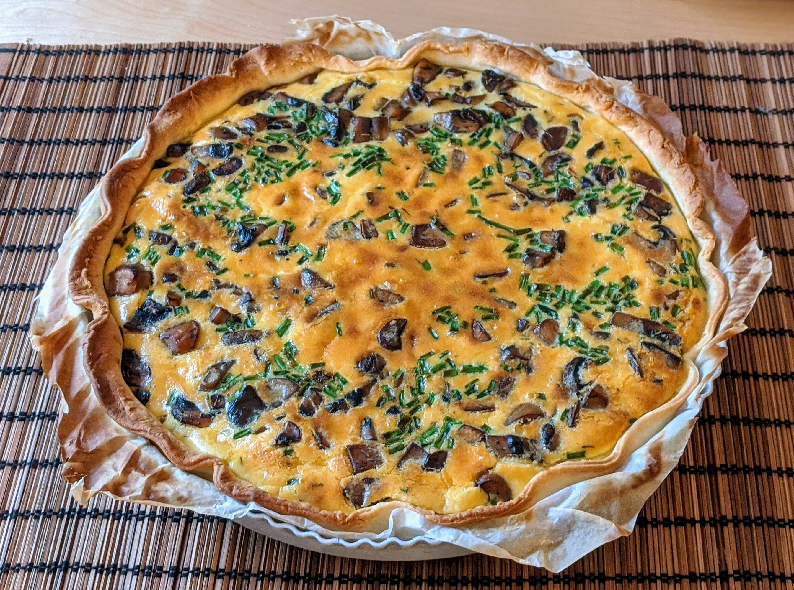

Quiche oignons-champignons

Pour une quiche :
- Trois gros oignons
- 300g de champignons
- Un petit verre de vin blanc
- Une pâte brisée
- Trois œufs
- 250mL de crème épaisse
- (Facultatif) Quelques tiges de ciboulette, ou des oignons frais
- Un peu de noix de muscade
- Sel, poivre, huile d'olive
- Éplucher et couper les oignons en lamelles. Les faire caraméliser : dans une poêle avec un peu d'huile d'olive, les faire revenir à feu assez fort en mélangeant régulièrement. Dès que ça commence à prendre quelques couleurs, ajouter une goutte de vin blanc et mélanger ; reproduire le processus jusqu'à ce que les oignons soient bien bruns.
- Pendant ce temps, laver et couper les champignons en gros morceaux. Réserver les oignons caramélisés, faire revenir les champignons dans la même poêle pour les faire dorer. Mouiller avec le reste du vin blanc et réserver une fois qu'il n'y a plus de liquide.
- Pendant ce temps, préchauffer le four à 200°C, étaler la pâte sur un moule (en la pliant un peu à l'extérieur, pour que les rebords ne s'affaissent pas), mettre des billes de cuisson au fond, et la faire chauffer à blanc 10-15 minutes, jusqu'à ce que ça commence à dorer.
- Pendant ce temps, mélanger les œufs et la crème, saler, poivrer, muscader. Si on a de la ciboulette, la laver, l'égoutter et la ciseler.
- Lorsque la pâte des prête, disposer d'abord les oignons au fond, puis les champignons, puis recouvrir du mélange liquide, et saupoudrer de la ciboulette.
- Faire cuire une demi-heure, jusqu'à ce que le dessus soit un peu doré ; déguster chaud avec une salade.